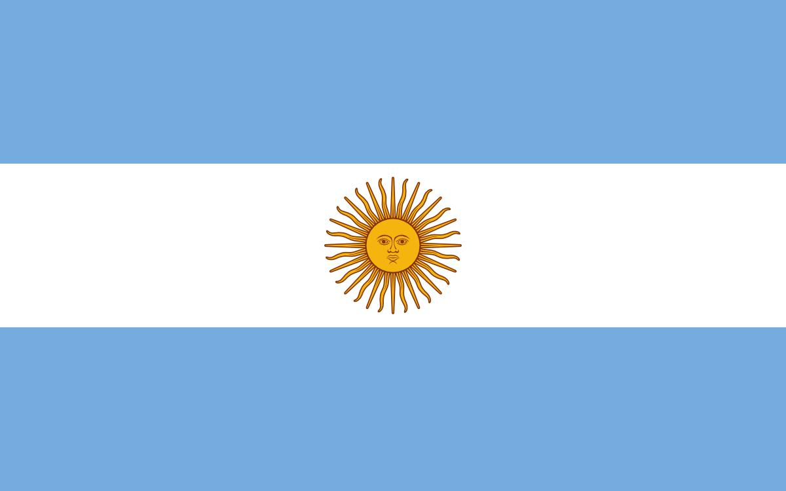
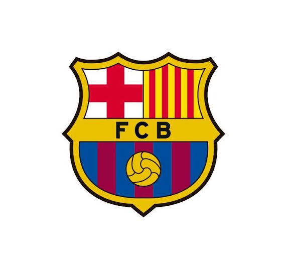
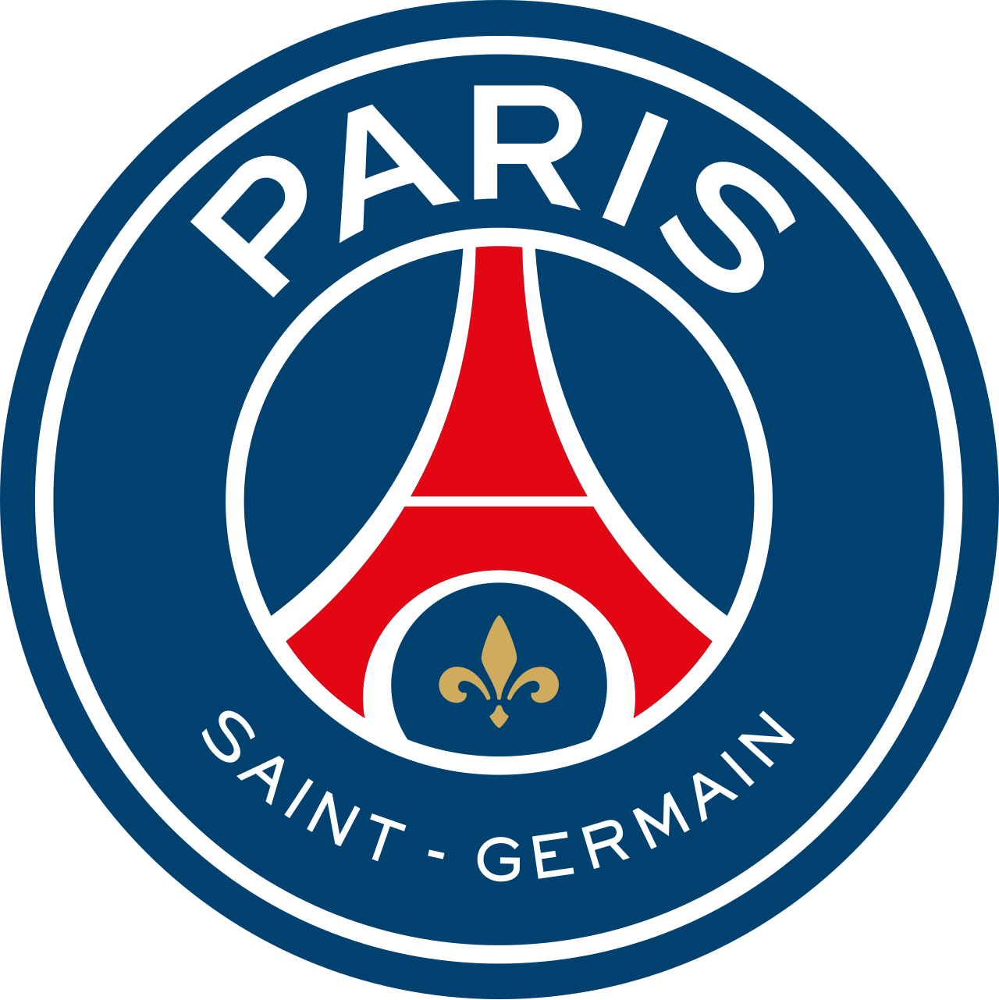
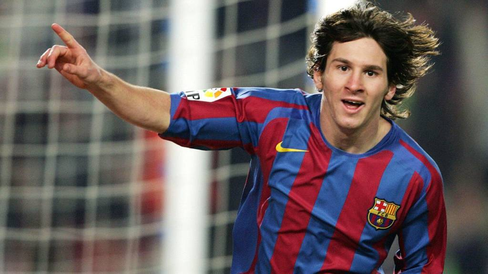

Um dos maiores jogadores da história do futebol.
Campeão do mundo com a Argentina.
1180
934
408+
47
Dados atualizados até outubro de 2026.

Seleção principal | 2005–2026
208
126
70
2022 — Qatar.
2021 e 2024.
2022 — Argentina venceu a Itália.
2005 — Países Baixos.
2008 — Jogos Olímpicos de Pequim.

BarcelonaTemporadas: 2004–2021
778
672
305
2004/05, 2005/06, 2008/09, 2009/10, 2010/11, 2012/13, 2014/15, 2015/16, 2017/18 e 2018/19.
2005/06, 2008/09, 2010/11 e 2014/15.
2008/09, 2011/12, 2014/15, 2015/16, 2016/17, 2017/18 e 2020/21.
2009, 2011 e 2015.
2009, 2011 e 2015.
2005, 2006, 2009, 2010, 2011, 2013, 2016 e 2018.

Paris Saint-GermainTemporadas: 2021–2023
74
32
35
2021/22 e 2022/23.
2022.
Temporadas: 2023–atual
115
100
72
Dados de jogos e gols: setembro de 2026.
2023.
2024.
2025.
2025.
2026.
Uma jornada histórica, marcada por gols, títulos e recordes.
Onde Messi se tornou uma lenda do futebol mundial.
Uma nova experiência no futebol francês.
Uma nova etapa da carreira nos Estados Unidos.
2009, 2010, 2011, 2012, 2015, 2019, 2021 e 2023.
2019, 2022 e 2023.
2010, 2012, 2013, 2017, 2018 e 2019.
2014 e 2022.
2015 e 2021.
2005.
Números e conquistas que marcaram a história do futebol.
Bola de Ouro
Copa do Mundo
Gols pelo Barcelona
Chuteira de Ouro Europeia
Títulos pelo Barcelona
Gols pela Argentina
Comparação dos gols marcados por Messi em sua carreira.
Números de referência do projeto. Os dados podem variar conforme a fonte e a atualização da carreira.
Os principais títulos conquistados por Messi em cada etapa da carreira.
Contagem de referência. Os totais variam conforme os critérios utilizados para competições oficiais e títulos reconhecidos.
Compare os números de Messi em cada equipe da sua carreira.
Partidas: 778
Gols: 672
Assistências: 305
Média de gols por partida: 0,86
Média de assistências por partida: 0,39
Partidas: 208
Gols: 126
Assistências: 70
Média de gols por partida: 0,61
Média de assistências por partida: 0,34
Partidas: 115
Gols: 100
Assistências: 72
Média de gols por partida: 0,87
Média de assistências por partida: 0,63
Partidas: 74
Gols: 32
Assistências: 35
Média de gols por partida: 0,43
Média de assistências por partida: 0,47
Escolha um ano e descubra um momento marcante da carreira de Messi.

Messi estreou oficialmente pela equipe principal do Barcelona em outubro de 2004, iniciando uma trajetória histórica.
Dois gigantes do futebol. Compare os números de suas carreiras por clubes e seleções.
Estatísticas de referência: outubro de 2026
Argentina 🇦🇷
Portugal 🇵🇹
Os totais de títulos e assistências podem variar conforme os critérios utilizados pelas fontes.
Você conhece mesmo a história de Lionel Messi? Responda às 20 perguntas e teste seus conhecimentos!